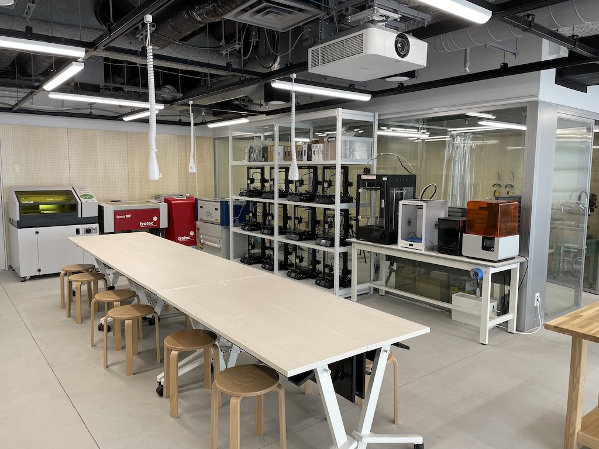

ガイダンス
デジタルファブリケーション
動画：
デジタルファブリケーション
とは 導入
スライド
Assessment(成績評価)
履修者には自分のwebページを作ってもらい、課題はそこに記述していきます。
出席、webページに記載されている内容、最終発表で評価を行います。
配点は下記の通りです。
基礎点（50点）
----指定した内容がwebページに記載されているか
----授業に積極的に参加しているか
内容評価点（50点）
---記述した、制作プロセスの記述、調べたことの記述が有用な情報かどうか
---魅力的な製作物かどうか
---文章、写真、映像等により製作物の必要性、魅力などを伝えられているか
※１つの項目で突出した評価があれば、それだけでも内容評価点が満点になることもある
Tools
これからアイディアは素早くスケッチして視覚化していく習慣をつけていきます。（
例1
、
例2
、
例3
）
アイディアのスケッチは絵の上手さは問いません。とにかく考えていることを視覚化して、すぐに人と共有し、前進するためのスキルです。
人が書いたスケッチをバカにしたり、いじったりしないでください。その言葉の一つ一つが人から創造性を奪っていきます。
これから常に持ち歩くもの
ノートPCに加えて、下記のものは常に持ち歩きましょう。おすすめのものでない、安いものでも構いません。
ノートPC
ノート or スケッチブック
スケッチブック例
大きいと持ち歩かなくなるので、A4やB5といった小さめがいいと思います。A4よりB5のほうが小さいです。
画用紙より薄い
クロッキーブック Sサイズ
画用紙
マルマン スケッチブックB5
鉛筆やシャーペン
マーカー
おすすめ
（裏写りが少ない）ー
ぺんてるサインペン黒
（世界的にメジャーだが高い&普通のノートだと裏写りする)ー
Sharpie Twin Tip
（裏写りが少ない&色をつけられる）ー
ぺんてるサインペンセット
ポストイット：ワークショップ、メモ、情報の共有に使います
おすすめ
Computer Aided Design
■2Dデザイン
ラスターとベクター
(外部サイト)
■2Dデザインソフト
Adobe Ilustrator
（有料ソフト。大学のPCには入っている。個人のPCに入れる場合は有料の
Adobe学生プラン
）
Inkscape
（無料。慣れないと使いにくい。）
Gravit
（無料。ブラウザで使用できる。）
Fusion360
（学生無料。線だけなら描けるが、2Dのスケッチに色はつけられない。3Dモデルに色をつけ、画像として書き出すことはできる。）
■3Dデザイン
Fusion360（学生無料)
--(
インストール方法
)
プログラミングで3DモデリングOpenSCAD
FABLAB
ファブラボとは
(Japan Fablab Networkサイト)
FabLabを作った人：
ニール・ガーシェンフェルド
(外部サイト)
How to make almost anything
(慶應義塾大学田中浩也研 HP)
世界に散らばるファブラボ
(FabFoundation HP)
神奈川大学のファブラボ(ファブラボみなとみらい)

湘南ひらつかキャンパスに2014年に開設されました。（ファブラボ平塚）
神奈川大学のファブラボの歴史
2014年10月 湘南ひらつかキャンパスにKU Fab Studioを開設
学生たちと開設した様子
2016年４月 ファブラボ平塚として、Fablabネットワークに参加（大学キャンパス内のファブラボとしては日本初)
当時の記事1
、
当時の記事2
、
教育実践の記事1
、
教育実践の記事2
、
教育実践の記事3
、
コロナ禍での社会貢献
2021年４月 みなとみらいキャンパスに移転し、ファブラボみなとみらいと改称
Assignment(次回までの宿題)
■全員共通
学生アカウントでFusion360を自分のPCにインストールして使える状態にしておく。
(
インストール方法
)
※必ず学生アカウントを作ってください。そうしないと、しばらくすると使えなくなります。
※学生アカウントの承認に数日かかることもあるので、早めに取り掛かりましょう。
Curaというソフトをインストールしておく
Curaのインストール方法
（ダウンロードサイトは
こちら
）
Toolsを揃えておく
■エクス・ビジネスプログラムを受講していない学生
Googleサイトで自分のwebページを作ってそのURLを
ここ
から連絡してください。
参考：
はじめてのGoogleサイト
（外部サイト：どこがくYoutbe）
■エクス・ビジネスプログラム受講生
デザイン演習Ⅰ・Ⅱでwebページの作成方法方を扱います。
既にBootCampでダウンロードしたフォーマットの中にこの授業用のフォルダがあるので、
デザイン演習1回目の後に、この授業のHPも一緒に綺麗にしてください。